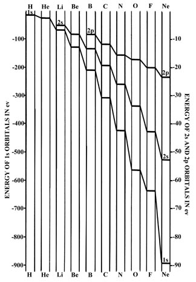

An Introduction to the Electronic Structure of Atoms
and Molecules
Dr. Richard F.W. Bader
Professor of Chemistry / McMaster University / Hamilton,
Ontario
|
Vertical Relationships
Table 5-2 lists
the atomic radii and the ionization potentials of the elements found in
the first column of the periodic table, the group I elements.
Table 5-2.
Atomic Radii and Ionization Potentials of Group I Elements
| Element |
Li
|
Na
|
K
|
Rb
|
Cs
|
| Radius (Å) |
1.50
|
1.86
|
2.27
|
2.43
|
2.62
|
| I1
(ev) |
5.4
|
5.1
|
4.3
|
4.2
|
3.9
|
The average value of the distance between the electron and the nucleus
increases as the value of the principal quantum number is increased. The
increase in the atomic diameters down a given group in the periodic table
is thus understandable. Each of the group I elements represents the beginning
of a new quantum shell. There will be a very sharp decrease in the effective
nuclear charge on passing from the preceding closed shell element to a
member of group I, as the number of the inner shell electrons is
increased by eight. This large sudden reduction in the effective
nuclear charge and the fact that the electron, because of the Pauli exclusion
principle, must enter a new quantum shell, causes the group I elements
to be larger in size and much more readily ionized than the preceding noble
gas elements. The decrease in the effective nuclear charge and the increase
in the principal quantum number down a given family bring about a steady
decrease in the observed ionization potentials. Thus the outer 6s
electron in cesium is on the average, further from the nucleus than is
the outer 2s electron in lithium. It is also more readily removed.
So far we have considered the periodic variations
in the energy required to remove an electron from an atom:
In some favourable cases it is possible to determine the energy released
when an electron is added to an atom:
The magnitude of the energy released when an atom captures an extra
electron is a measure of the atom's electron affinity.
It might at first seem surprising that a neutral
atom may attract an extra electron. Indeed many elements do not have a
detectable electron affinity. However, consider the outer electronic configuration
of the group VII elements, the halogens:
ns2np5
There is a single vacancy in the outer set of orbitals and the
effective nuclear charge experienced by the valence electrons in a halogen
atom is almost the maximum value possible for any given row. Because of
the incomplete screening of the nuclear charge by the outer electrons,
the remaining vacancy in the outer shell will, in effect, exert an attractive
force on a free electron large enough to bind it to the atom.
The electron affinities for the rare gas atoms will be
effectively zero even though the effective nuclear charge is a maximum
for this group of elements there are no vacancies in the outer set of orbitals
in a rare gas atom and as a result of the Pauli principle, an extra electron
would have to enter an orbital in the next quantum shell. The electron
in this orbital will experience only a very small effective nuclear charge
as all of the electrons originally present in the atom will be in inner
shells with respect to it. Elements to the left of the periodic table,
the alkali metals for example, do have vacancies in their outer quantum
shell but their effective nuclear charges are very small in magnitude.
Thus these elements do not exhibit a measurable electron affinity. The
electron affinity increases across a given row of the periodic table and
reaches a maximum value with the group VII elements. This is a direct reflection
of the variation in the effective nuclear charge.
The orbital vacancy in which the extra electron is placed
is found at larger distances from the nucleus when the principal quantum
number is increased. Thus the electron affinity should decrease down any
given family of elements in the periodic table. For example, the electron
affinities for the halogens should decrease in the order F > Cl > Br >
I. (Click
here for note.)
The variation in the ionization potentials across a given row
is reflected in the values shown in the atomic orbital energy level diagram
for the elements from hydrogen through to neon (Fig.
5-3).
|  |
Fig. 5-3. An orbital energy level diagram
for the elements H to Ne
|
(Note that the energy scale used for the 1s orbital differs by
a factor of ten from that for the 2s and 1p orbitals.) The
orbital energies show a uniform decrease when the nuclear charge is increased,
reflecting an increase in the binding of the electrons. The total energy
of a many-electron atom is not simply the sum of the orbital
energies. Summing the orbital energies does not take proper account of
the repulsions between the electrons. The orbital energies do, however,
provide approximate estimates of the ionization potentials.
The ionization potential is the energy required to remove one electron
from an atom, and an orbital energy is a measure of the binding of a single
electron in a given orbital. Thus the ionization potential should
be approximately equal to minus the orbital energy. For example,
the ionization potential of lithium is 5.39 ev and the 2s orbital
energy is -5.34 ev. Similarly I1,
for neon is 21.56 ev and the 2p orbital energy is -23.14 ev.
Shell structure is also evident in the ionization
potentials and orbital energies of atoms. By exposing the atom to light
of very short wavelength (in the X-ray region of the spectrum), it is possible
to ionize one of the inner shell electrons, rather than a valence electron.
That is, the energy of an X-ray photon is comparable to the binding energy
of an inner shell electron. The resulting ion is in a very unstable configuration
and after a very brief period of time an electron from the outer shell
"falls" into the vacancy in the inner shell. In falling from an outer to
an inner shell the binding of the electron is greatly increased and a photon
is emitted. The energy of this photon should be approximately
equal to the difference in energies of the outer shell and inner shell
orbitals. For example, the photon emitted when neon loses an inner shell
electron has an energy of 849 ev. The difference in energy between the
2p and 1s orbitals of neon is 869 ev. Photons with energies
in this range occur in the X-ray region of the spectrum. It is apparent
from the variation in the 1s orbital energies shown in Fig.
5-3 that the energies and hence the frequencies of the X-ray
photons will increase as the nuclear charge is increased. It was from a
study of the X-ray photons emitted by the elements that Moseley was first
able to determine the nuclear charges (the atomic numbers) of the elements.